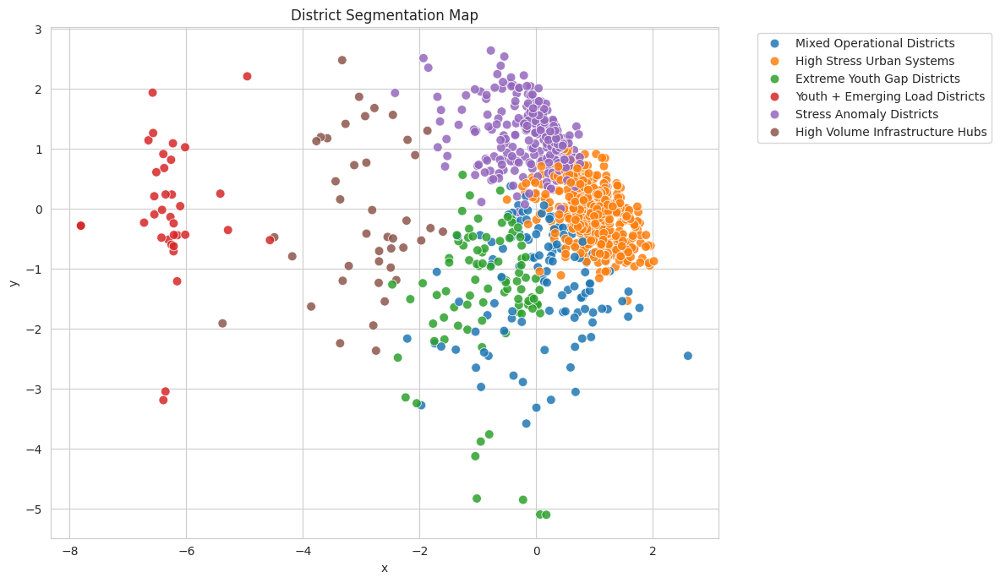

Archetype Analysis
Operational Cluster Profiles
Dimensional Segmentation
Our KMeans model identifies 6 natural groupings within the district feature space. These clusters represent stable operational signatures, allowing for standardized policy responses across geographically distant regions.

Feature-Space Projection (t-SNE)
Discovery Summary
Core Objective
Policy Standardization
Model Selection
K-Means (k=6)
Feature Density
5 Operational Dimensions
Intelligence Archetypes
Loading Archetype Data...